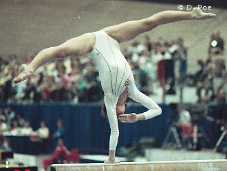

Tunde Zsilinszki (HUN)
1982 Jr. European B Champion

Zsilinszki was born on December 31, 1967 in Bekescsaba and trained at the Bekescsaba Club with coach Laszlo Hajdu. Today, she's a coach there.
Competition Results
1979
Jr. Friendship Tournament (Druzhba): 6th Team, 17th AA, 6th UB
Pioneer Olympics: 1st AA, 1st B, 2nd FX
1980
Hungarian Youth Championships: 1st AA, 1st UB, 1st B, 1st FX
Jr. Friendship Tournament (Druzhba): 6th Team
1982
American Cup: 9th AA (prelims)
Chunichi Cup: 9th AA
Hungarian Championships: 1st AA, 1st B, 1st FX
HUN-FRG Dual Meet: 2nd Team, 2nd AA
Intl. Mixed Pairs: 18th Team
Jr. European Championships: 13th AA, 1st B
Tokyo Cup: 2nd B
1983
CSSR-HUN-AUT-GRE: 2nd Team, 1st AA
European Championships: 15th AA
GDR-HUN Dual Meet: 2nd Team, 5th AA
Hungarian Championships: 1st AA, 1st B, 1st FX, 2nd UB
Hungarian National Middle School Championships: 2nd Team, 1st AA
1984
Alexandria International: 1st AA, 1st UB, 1st B, 1st FX
CSSR Spartakiade (Olomouc): 19th AA
FRG-ROM-HUN: 3rd Team, 12th AA
Hungarian Championships: 4th AA, 3rd B, 3rd FX
1985
Belgian Gym Masters: 12th AA, 3rd B
GDR-HUN Dual Meet: 7th AA
Intl. Championships of Romania: 10th AA
Rome Grand Prix: 8th AA
World Championships: 8th Team, 21st AA
1987
Athens International: 5th AA, 3rd B
Hungarian Championships: 2nd B
Kraft International: 12th AA
Moncada Cup: 2nd AA, 1st UB, 1st B, 3rd FX
World Championships: 7th Team, 72nd AA (prelims)
1988
Hungarian University Championships: 1st AA, 1st UB, 1st B, 1st FX, 3rd V
This page was created on September
16, 2005 and was last updated on January 11, 2022.
© Gymn Forum